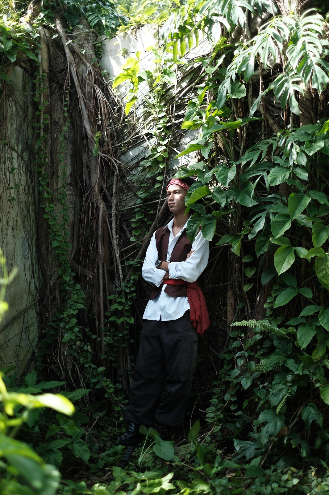

Pelajar | Calon Software engineer

Halo! Saya Muhammad Rafino Zaky Benicia, seorang pelajar yang tertarik dengan dunia IT. Saya sedang belajar HTML dan CSS sejak kelas 7 Sekolah menengah pertama dan menekuni bidang tersebut sampai sekarang.
Mata pelajaran yang saya pelajari dan saya tekuni selama menempuh pendidikan di SMA.
Mampu memahami beberapa skill sederhana dalam bidang informatika, memahami algoritma, dan menyelesaikan permasalahan.
Contoh penguasaan: 100%
paham beberapa rumus dalam matematika dan bisa menyelesaikan sistem operasi matematika.
Contoh penguasaan: 85%
Mampu memahami kosakata, membaca teks, dan melakukan percakapan sederhana.
Contoh penguasaan: 90%
Memahami bacaan dan kosakata menurut kamus KBBI, dan bisa menganalisis struktur bahasa.
Contoh penguasaan: 90%
Berikut beberapa proyek dan karya yang saya kerjakan selama belajar di SMA.
INFORMATIKA
Membuat website yang menampilkan profil, kemampuan akademik, dan karya pribadi menggunakan HTML dan CSS Inline.
Kemampuan: HTML, CSS, desain web.
Lihat Proyek© 2026 Muhammad Rafino Zaky Benicia | Portofolio Pribadi